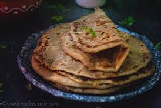

Paratha
Calories: 350 kcal
Health Benefits: Rich in healthy fats, high in fiber, great source of protein and vitamins.

Ingredients:
- 2 cups whole wheat flour (atta) 1/2 tsp salt 1 tbsp oil or ghee (optional)
- Water (about 3/4 cup, adjust as needed)
- Ghee or butter (for brushing, optional)
Instructions:
- In a large bowl, combine whole wheat flour and salt. You can also add oil or ghee to make the chapathi soft. Gradually add water, a little at a time, and mix to form a dough. Knead for about 5-7 minutes until the dough is soft and smooth. If the dough is sticky, add a little more flour. Cover the dough with a damp cloth and let it rest for at least 15-20 minutes.
- Roll the chapathi:
- Divide the dough into equal-sized balls. Roll each ball into a smooth ball between your palms. Flatten the ball slightly and dust it with flour. Using a rolling pin, roll out the dough into a thin circle, about 6-8 inches in diameter. Heat a tawa or skillet over medium heat. Place the rolled chapathi on the tawa and cook for about 30 seconds on one side. Flip the chapathi and cook for another 30 seconds. Flip again and cook until brown spots appear on both sides. Remove from heat and brush with ghee or butter, if desired. Repeat with the remaining dough balls. Serve hot with curry, dal, or any side dish of your choice.